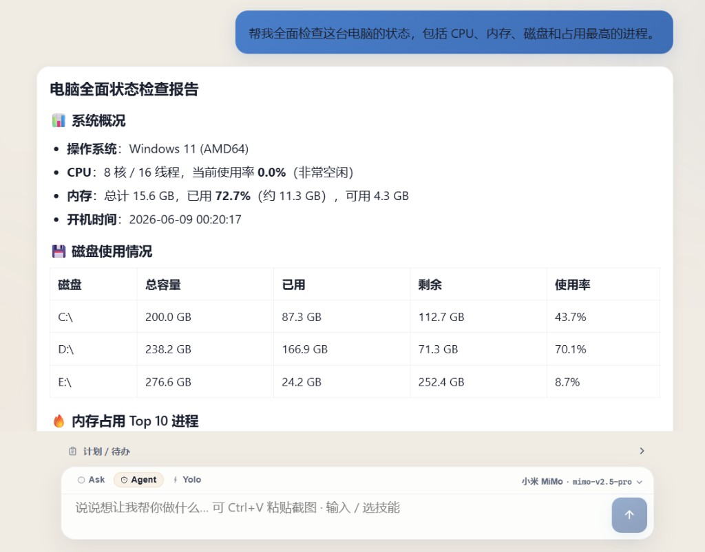

自然语言任务
以目标描述代替命令行操作。例如：将桌面安装包归档至指定目录，并先输出待处理文件清单供确认。
星期五面向 Windows 桌面环境，支持以自然语言描述任务。Agent 将在本机规划执行步骤，调用文件、系统与文档等工具完成操作。对话记录与配置默认保存在本机，无需绑定云账号。

与仅支持文字对话的在线服务不同，星期五可直接访问本机文件与系统信息，并在用户确认后执行实际操作。
以目标描述代替命令行操作。例如：将桌面安装包归档至指定目录，并先输出待处理文件清单供确认。
支持目录管理、系统体检、Office 文档生成、截图识图、软件下载等 28+ 项工具，任务在本地 Windows 环境完成。
Ask 模式仅查询不修改；Agent 模式对删改操作进行确认。会话与设置存储于 %APPDATA%\Friday\。
以下为常见任务示例。完成 API 配置后，可在客户端直接发起同类请求。
列出下载目录中超过 30 天的安装包，经确认后执行归档或删除。
汇总 CPU、内存与各磁盘剩余空间，生成可读的状态说明。
依据会议纪要文本生成结构化 Word 文档，并应用指定标题。
粘贴系统或应用报错截图，请求原因说明与处理建议（需配置视觉 API）。
配置微信端后，可通过手机向家中 Windows 发送任务指令。执行在目标电脑本地完成，进度与结果同步至微信会话。涉及删除或覆盖等操作时，须在聊天中审批后执行。
核心功能安装后即可使用；以下能力可在设置中按需启用。
对话、推理、视觉与生图可分别配置 Key（DeepSeek、火山方舟、小米 MiMo 等），连接测试通过后再保存。
输入 / 选择技能包；Ctrl+V 粘贴截图进行视觉分析。常用流程可保存为技能以便复用。
可在设置中接入生图 API；GitHub 技能与规则扩展在「设置 → 扩展」中管理。
加载中…